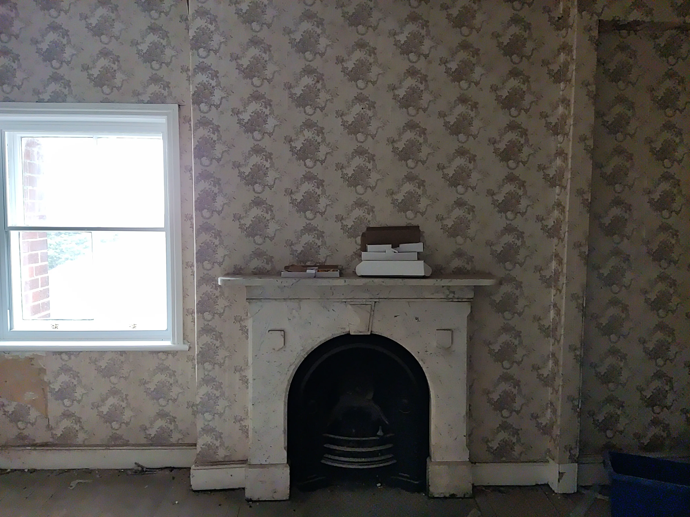
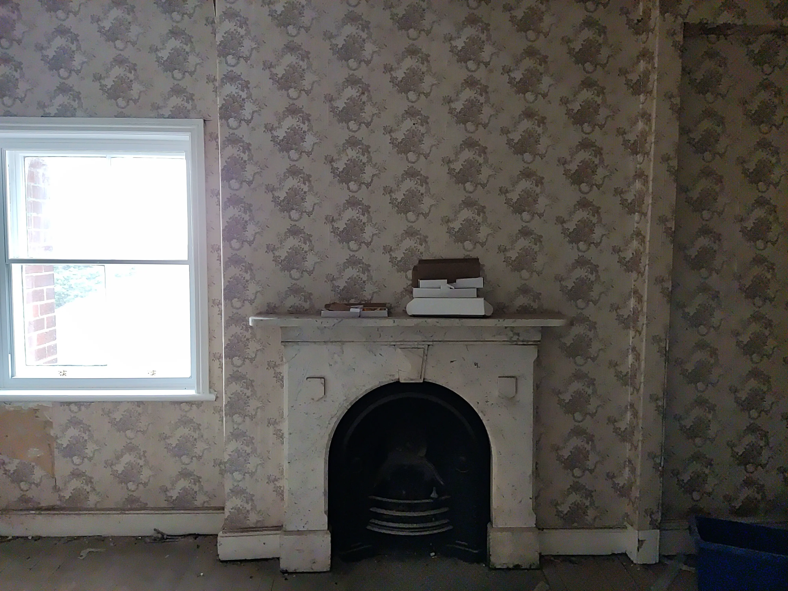
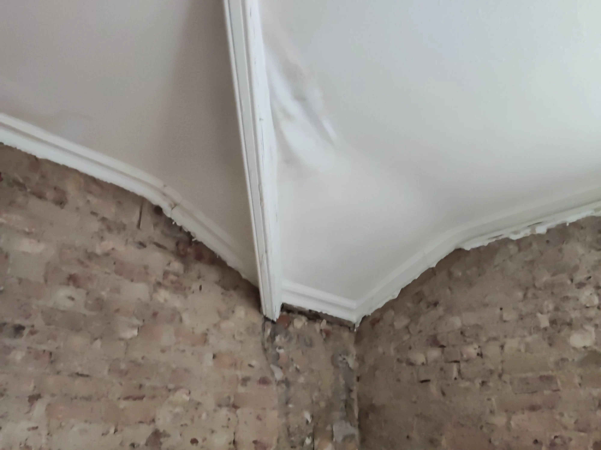
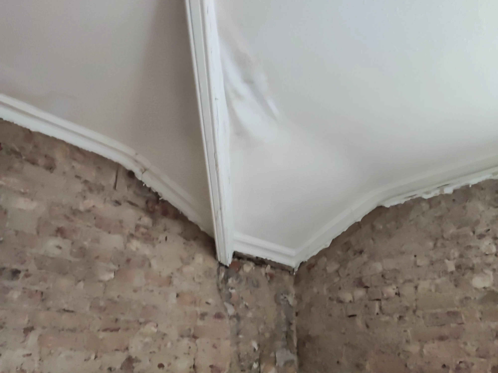

Phase Two
Phase Two is the second phase of the project. This phase will be the final phase of the project. The purpose of this phase is to rennovate the Outwood third floor to make it a more modern and increase teaching capacity within the college.
Current Situation
 

 
